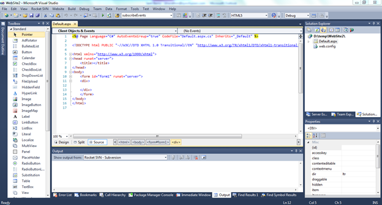
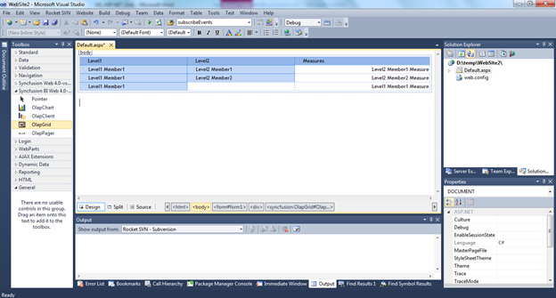
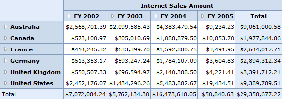

The steps to get started are as follows:
1. Click Start > All Programs > Microsoft Visual Studio 2010.
2. Create a new ASP.NET Web Site.
3. Drag the OlapGrid control from the Syncfusion BI Web Toolbox onto the Design page.

Figure 5: OLAP Grid in the Source Page

Figure 6: OLAP Grid Appearance in the Design Page
4. Add the following namespaces in the code-behind part.
· Syncfusion.Web.UI.WebControls.Grid.Olap
· Syncfusion.Olap.Manager
· Syncfusion.Olap.Reports
· Syncfusion.Olap.DataProvider
To bind the OlapGrid control with cube data, initiate the OlapDataManager using the methods provided in the following link
Methods for instantiating OlapDataManager
5. After instantiating the OlapDataManager, create an OlapReport and add it to the OlapDataManager either through the SetCurrentReport(OlapReport) method or by the CurrentReport property.
6. Now the OlapReport is assigned to the OlapGrid control’s OlapDataManager and the DataBind() method is called to render the OLAP grid with the current report information.
The OlapDataManager can be bound to the OlapGrid using the following code:
|
DataManager.SetCurrentReport(this.CreateReport()); this.olapGrid1.OlapDataManager = DataManager; this.olapGrid1.DataBind(); |
|
[VB] DataManager.SetCurrentReport(Me.CreateReport()) Me.olapGrid1.OlapDataManager = DataManager Me.olapGrid1.DataBind() |
Also, click
here for more sample reports. The OlapGrid control uses HttpHandler
by default to procure data from the OLAP Server on the member drill-down and for
the header cell ToolTip. Therefore, it requires OlapDataHandler to be
included in the httpHandlers section in Web.config file.
|
[Web.Config] <httpHandlers> ..... <add path="*UpdateOlap*" verb="GET" type="Syncfusion.Web.UI.WebControls.Grid.Olap.Handlers.OLAPDataHandler, Syncfusion.OlapGrid.Web,Version=x.x.x.x, Culture=neutral, PublicKeyToken=3d67ed1f87d44c89"/> </httpHandlers> |
 Note: x.x.x.x in
the above code snippet refers to the current version of the Essential Studio
running in your system.
Note: x.x.x.x in
the above code snippet refers to the current version of the Essential Studio
running in your system.
Run the application. The following output is generated.

Figure 7: OlapGrid Control with OLAP Data